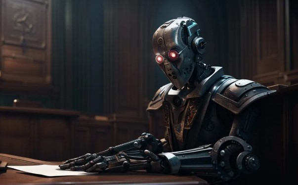

Despite their objective and artificial nature, AI judges can still be biased.
An AI model is only as good as the data it is trained on.
Racial and gender bias:
- AI-driven assessment tools, such as COMPAS, can inadvertently perpetuate racial and socioeconomic biases.
For example, a report by the National Institute of Standards and Technology found that facial recognition algorithms
used by police created more false positive results when evaluating images of Black women.
- There have been concerns about their accuracy and fairness. For example, a study by ProPublica found that the
COMPAS tool falsely flagged Black defendants as future criminals at almost twice the rate of white defendants,
highlighting potential racial bias in the algorithm.
Loss of Empathy
- AI judges lack the ability to understand and empathize with the human condition, which is a crucial element in the justice system.
- This can lead to decisions that are technically correct but fail to consider the unique circumstances of individual cases.
Training:
- AI can perpetuate discrimination if allowed
- Predictive policing applications, such as PredPol, may be tainted by being trained on "dirty data."
This refers to historical data that includes biases or errors, such as arrest records and police reports that have
not been cleaned or corrected for documented violations. As a result, AI systems trained on this data may lead to
excessive or insufficient deployment of police resources to the same communities that were the subject of the tainted data.

- Over-reliance on AI: There's a risk that the legal system might become overly dependent on AI, leading to a reduction in human oversight.
- Transparency and Accountability: AI algorithms can be complex and opaque, making it difficult to understand how decisions are made.
- Privacy Concerns: AI policing tools often rely on surveillance and data collection, raising concerns about privacy.
- Legal and Ethical Challenges: The use of AI in the justice system raises numerous legal and ethical questions.
- Economic Impacts: The implementation of AI in the justice system could lead to job displacement for legal professionals.
- Technological Limitations: AI systems are not infallible and can suffer from technical limitations.